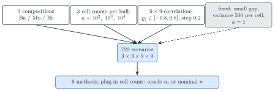
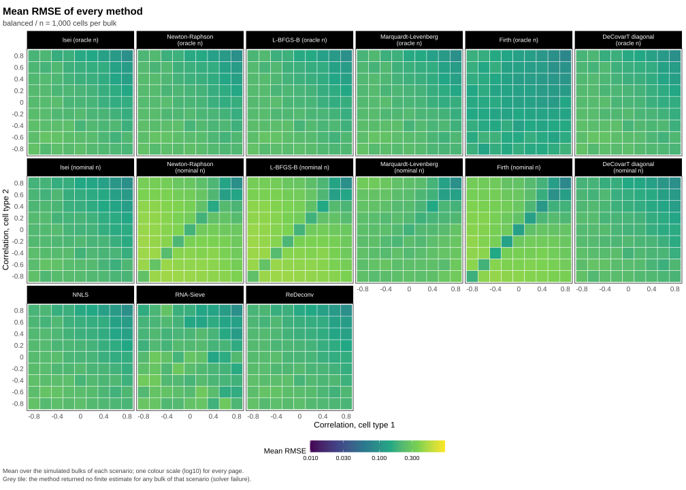
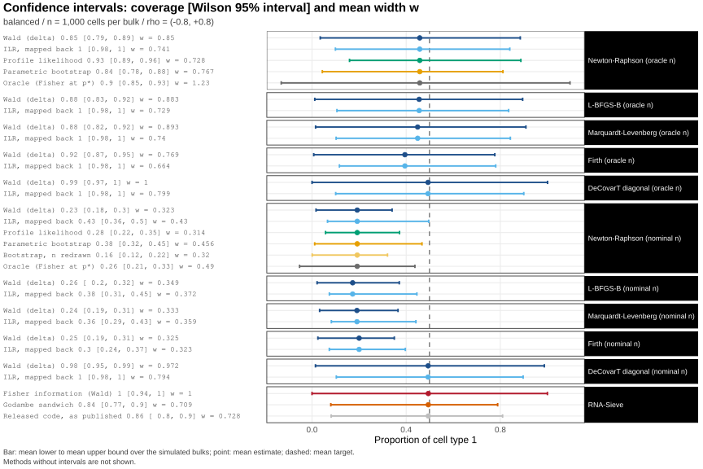
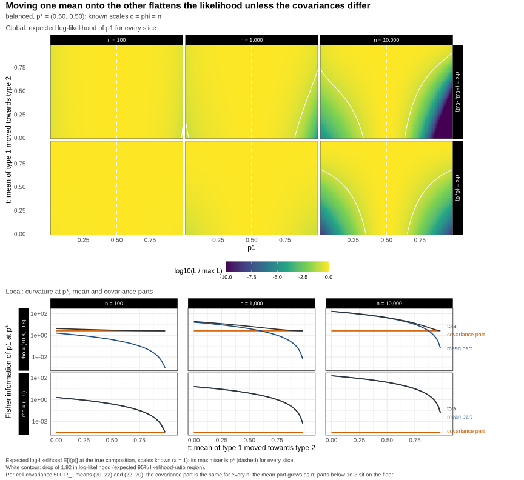

§2.4 Bivariate toy, single-cell model (G = 2, J = 2)
Full script: scripts/fig05_bivariate_single_cell.R
26 Nov 2026
Source:vignettes/R3-bivariate-single-cell.qmd
The bivariate toy fits the population convolution, whose bulk covariance is \sum_jp_j^2\boldsymbol\Sigma_j. The model that DeCovarT fits on real bulks is the single-cell model: a bulk is the sum of n_i cells, and its covariance is linear in the composition (single-cell model). This scenario rebuilds the toy on that model, with the same two genes, the same two cell types and the same small centroid gap. Three things vary: the composition, the number of cells per bulk and the two gene–gene correlations. The aim is to compare the optimisers (Newton–Raphson, L-BFGS-B, Marquardt–Levenberg) and the interval constructions on a likelihood that can be drawn in full. Construction, benchmark and figures live in one script, scripts/fig05_bivariate_single_cell.R (seed 20261125).

Show the code
---
config:
layout: elk
theme: sandstone
---
flowchart TB
ROOT["Bivariate toy, single-cell model"]
ROOT --> Ba["Balanced"]
ROOT --> Mo["Moderately unbalanced"]
ROOT --> Hi["Highly unbalanced"]
Ba --> Ba2["n = 100"]
Ba --> Ba3["n = 1,000"]
Ba --> Ba4["n = 10,000"]
Mo --> Mo2["n = 100"]
Mo --> Mo3["n = 1,000"]
Mo --> Mo4["n = 10,000"]
Hi --> Hi2["n = 100"]
Hi --> Hi3["n = 1,000"]
Hi --> Hi4["n = 10,000"]--- config: layout: elk theme: sandstone --- flowchart TB ROOT["Bivariate toy, single-cell model"] ROOT --> Ba["Balanced"] ROOT --> Mo["Moderately unbalanced"] ROOT --> Hi["Highly unbalanced"] Ba --> Ba2["n = 100"] Ba --> Ba3["n = 1,000"] Ba --> Ba4["n = 10,000"] Mo --> Mo2["n = 100"] Mo --> Mo3["n = 1,000"] Mo --> Mo4["n = 10,000"] Hi --> Hi2["n = 100"] Hi --> Hi3["n = 1,000"] Hi --> Hi4["n = 10,000"]
Generative model
Bulk i draws its cell counts, then the exact Gaussian sum of those cells (simulate_bulk_from_cells(), platform scale a=1):
\boldsymbol m_{\cdot i}\sim\operatorname{Multinomial}(n_i,\boldsymbol p^{\star}), \qquad \boldsymbol y_{\cdot i}\mid\boldsymbol m_{\cdot i} \sim\mathcal N_2\bigl(n_i\tilde{\boldsymbol\mu}\boldsymbol p_{\cdot i},\; n_i\boldsymbol S_W(\boldsymbol p_{\cdot i})\bigr), \qquad \boldsymbol p_{\cdot i}=\boldsymbol m_{\cdot i}/n_i, \tag{1}
with \boldsymbol S_W(\boldsymbol p)=\sum_jp_j\boldsymbol\Sigma_{W,j}. The mean scale c_i=a\,n_i and the variance scale \phi_i=a^2n_i both equal n_i. The estimand is the realised fraction \boldsymbol p_{\cdot i}, as in the two-lineage scenario.
- The per-cell means are \tilde{\boldsymbol\mu}_{\cdot1}=(20,22) and \tilde{\boldsymbol\mu}_{\cdot2}=(22,20) counts per cell: the small centroid gap of the population toy.
- The per-cell covariances are \boldsymbol\Sigma_{W,j}=500\,\boldsymbol R_j, with \boldsymbol R_j the exchangeable correlation matrix of \varrho_j. A per-cell variance of 500 at a mean of about 21 counts is a coefficient of variation of 1.06, the variance of a negative binomial with dispersion \theta\approx0.92.
- The number of cells per bulk is drawn around a nominal value n\in\{10^2,10^3,10^4\}: each bulk draws n_i=\operatorname{round}\{n\exp(\sigma z-\sigma^2/2)\}, z\sim\mathcal N(0,1), \sigma^2=\log(1+0.3^2): a log-normal count of mean n and coefficient of variation 30\%.
Per cell, \boldsymbol y_{\cdot i}/n_i has covariance \boldsymbol S_W(\boldsymbol p)/n_i. At n=1000 and \boldsymbol p=(1/2,1/2) it equals the homoscedastic bulk covariance \tfrac14(\boldsymbol R_1+\boldsymbol R_2) of the population toy (ledger V49a), so that page of this scenario has the same means, the same bulk covariance and the same Fisher information as the corresponding page of §2.2. The two models part at other compositions: at \boldsymbol p=(0.99,0.01) the population covariance is close to \boldsymbol R_1, the single-cell one to \tfrac12\boldsymbol R_1, because the weights are p_j^2 in one and p_j in the other. The number of cells moves the bulk variance by a factor of ten each way, from about five times to a twentieth of the population toy’s.
Why the scales are given
With G=2 genes, one bulk cannot identify c_i or \phi_i. The mean c\,\tilde{\boldsymbol\mu}\boldsymbol p has two free parameters, c and p_1, for two observations, so it fits any bulk inside the cone of the two signatures exactly. The residual is then zero, the closed-form \hat\phi=\boldsymbol r^\top\boldsymbol W\boldsymbol r/G is zero, and the profiled log-likelihood has no maximum. The REML degrees of freedom are \nu=G-J=0. Every scale-dependent fit therefore receives c_i and \phi_i (mean_scale, variance_scale), and only p_1 is estimated. deconvolute_single_cell() accepts G=J only on that path.
In practice n_i is not known. Each such method therefore runs twice. The oracle arm receives the true n_i of the bulk, the best case. The nominal arm receives the design value n, the realistic case, whose error has a coefficient of variation of 30%. A wrong c moves \boldsymbol y/c along \tilde{\boldsymbol\mu}\boldsymbol p^\star, which is orthogonal to the segment between the two signatures only for the balanced composition, and a wrong \phi rescales the covariance.
Information in the mean and in the covariance
At known scales, the Fisher information of p_1 at \boldsymbol p^\star splits into a mean part and a covariance part (ledger V49c):
I(p_1)=n\,\boldsymbol d^\top\boldsymbol S_W(\boldsymbol p^\star)^{-1}\boldsymbol d +\tfrac12\operatorname{tr}\bigl[\{\boldsymbol S_W(\boldsymbol p^\star)^{-1} (\boldsymbol\Sigma_{W,1}-\boldsymbol\Sigma_{W,2})\}^2\bigr], \qquad \boldsymbol d=\tilde{\boldsymbol\mu}_{\cdot1}-\tilde{\boldsymbol\mu}_{\cdot2}. \tag{2}
The mean part grows with n; the covariance part does not, and it is zero when \varrho_1=\varrho_2. Its share f_{\mathrm{cov}}=I_{\mathrm{cov}}/I is recorded for every scenario (fisher_mean, fisher_cov, f_cov in the config).
| Composition | n | median f_{\mathrm{cov}} | f_{\mathrm{cov}} at (\varrho_1,\varrho_2)=(-0.8,0.8) |
|---|---|---|---|
| balanced | 100 | 0.20 | 0.62 |
| balanced | 1,000 | 0.024 | 0.14 |
| balanced | 10,000 | 0.0024 | 0.016 |
| moderately unbalanced | 100 | 0.20 | 0.87 |
| moderately unbalanced | 1,000 | 0.025 | 0.41 |
| moderately unbalanced | 10,000 | 0.0025 | 0.065 |
| highly unbalanced | 100 | 0.20 | 0.97 |
| highly unbalanced | 1,000 | 0.024 | 0.76 |
| highly unbalanced | 10,000 | 0.0025 | 0.24 |
With uncorrelated genes the information is 0.016\,n in every composition: a standard error of p_1 of 0.79 at n=100, 0.25 at n=1000 and 0.079 at n=10^4. At n=100 the means alone barely locate p_1 in (0,1); opposite correlations then carry most of what can be learnt.
Factorial design
| Factor | Levels |
|---|---|
| Composition \boldsymbol p^\star | balanced (1/2,1/2); moderately unbalanced (17/20,3/20); highly unbalanced (99/100,1/100) |
| Cells per bulk n (nominal) | 10^2; 10^3; 10^4 |
| Gene–gene corr. CT 1 (\varrho_1) | \{-0.8,-0.6,\ldots,0.8\}, 9 levels |
| Gene–gene corr. CT 2 (\varrho_2) | \{-0.8,-0.6,\ldots,0.8\}, 9 levels |
| Fixed | means (20,22), (22,20); \boldsymbol\Sigma_{W,j}=500\,\boldsymbol R_j; a=1; equal cell sizes |
| Total scenarios | 3\times3\times9\times9=\mathbf{729} |
Scenario identifiers read SB{index}_{Ba|Mo|Hi}_n{1e2|1e3|1e4}, for example SB122_Ba_n1e3 (\varrho_1=\varrho_2=0, balanced, n=1000). The heteroscedastic and large-gap levels of §2.2 are not crossed here: the cell count already moves the bulk variance, and n_i cannot create the gene-specific variance ratio of the heteroscedastic level.
With the highly unbalanced composition and n=100, the rare type counts one cell on average, and 37\% of the bulks hold none: their target sits on a face of the simplex. Wald and ILR intervals are undefined there, so their coverage is over interior targets; the boundary test uses exactly these bulks.
Inference
Every method is scored on the same simulated bulks.
| Method | Function or code | Input | Intervals |
|---|---|---|---|
lsei |
deconvolute_ratios_deconrnaseq() on \boldsymbol y/c
|
true means, plug-in c | none |
| NNLS | deconvolute_ratios_nnls() |
true means (free scale) | none |
| Newton–Raphson | deconvolute_single_cell(optimiser = "newton") |
true moments, plug-in scales | Wald, ILR, profile, oracle; bootstrap (8 scenarios) |
| L-BFGS-B | deconvolute_single_cell(optimiser = "lbfgsb") |
true moments, plug-in scales | Wald, ILR |
| Marquardt–Levenberg | deconvolute_single_cell(optimiser = "marquardt") |
true moments, plug-in scales | Wald, ILR |
| Firth | fit_firth_single_cell() |
true moments, plug-in scales | Wald, ILR |
| DeCovarT diagonal | Newton–Raphson with the off-diagonals of \boldsymbol\Sigma_{W,j} set to zero | true variances, plug-in scales | Wald, ILR |
| RNA-Sieve |
rnasieve 0.1.4 (Python), corrected update |
reference panel, cohort of N bulks | released, Fisher, Godambe |
| ReDeconv |
redeconv 1.2.1 (Python) |
true means and standard deviations | none |
- The three DeCovarT solvers maximise the same log-likelihood at the same plug-in scales. Newton–Raphson and Marquardt–Levenberg work in the ILR coordinate; Newton uses the PORT trust region of
stats::nlminb(), Marquardt–Levenberg adds Levenberg damping and stops on the relative distance to the maximum (Marquardt 1963; Commenges et al. 2006; Philipps et al. 2023). L-BFGS-B runs on the closure chart \boldsymbol p=\boldsymbol w/\mathbf1^\top\boldsymbol w, \boldsymbol w\ge0, and can return exact zeros (Byrd et al. 1995). Firth maximises the Jeffreys-penalised log-likelihood (Firth 1993). - DeCovarT diagonal fits the model of RNA-Sieve (Erdmann-Pham et al. 2021): independent genes, a variance linear in the cell counts. Run at the true variances and scales, it isolates what the gene–gene correlation adds; its intervals are those of the diagonal (working) model. RNA-Sieve itself estimates the reference from a panel of R individuals with 20 cells per type each (
simulate_reference_replicates(), own seed) and fits the cohort of N bulks jointly. The released_minimize_alphapasses its simplex constraints tocp.Minimize(); under cvxpy 1.6 that raises an error the package catches, and the proportions never leave their start. The runner replaces it with the corrected update (scripts/benchmark_metrics/python/run_rnasieve.py). -
lseireads the bulk per cell \boldsymbol y/c with the plug-in c and keeps \mathbf1^\top\boldsymbol p=1 (Gong and Szustakowski 2013); NNLS fits a free scale and renormalises (Dessole et al. 2023), so it needs no plug-in. - Eight methods are not run. DWLS (Tsoucas et al. 2019) chooses its dampening constant on random halves of the genes; at G=2 a half is one gene, and
DWLS::solveDampenedWLS()(0.1.0) stops on every bulk. RLM and CIBERSORT regress two observations on two signatures; MEAD and DECALS rely on asymptotics in the number of genes, and DECALS’ point estimate islsei. BayesPrism, SCDC and DeMixSC need count data or many genes.
Interval constructions
The bootstrap runs on the eight scenarios \{balanced, moderately unbalanced\}\times\{n=100,1000\}\times
\{(\varrho_1,\varrho_2)=(0,0),(-0.8,0.8)\}. In the nominal arm the other intervals treat n as known, so they ignore its 30% error. bootstrap_nprior draws each replicate at n\exp(\sigma z-\sigma^2/2) and refits at the nominal n: it carries the uncertainty of the cell count into the interval (bootstrap_single_cell(n_cells_sdlog = )).
A Godambe sandwich is not run: it needs independent score contributions, and one bulk of two correlated genes has two dependent ones. Coverage is reported with a Wilson Monte Carlo interval (Morris et al. 2019).
Boundary test of an absent cell type
For every bulk, lrt_single_cell(null_value = c(celltype_2 = 0)) compares the fit with the vertex \boldsymbol p=(1,0), at the oracle and at the nominal scales. The null lies on a face, so the statistic is referred to \tfrac12\chi^2_0+\tfrac12\chi^2_1 (Self and Liang 1987). Bulks that hold no type-2 cell measure its size; the others its power.
Run size
scripts/fig05_bivariate_single_cell.R; FIG05_POSTPROCESS_ONLY=1 redraws the figures.
| Constant | Meaning | Value |
|---|---|---|
N_REPLICATES |
Monte Carlo bulks per scenario, N | 200 |
N_REFERENCE |
individuals of the reference panel, R (RNA-Sieve) | 200 |
N_BOOT |
bootstrap replicates, B | 199 |
CORES |
workers for the N bulks of a scenario | a third of half the cores (14 of 88) |
RUN_DWLS |
run DWLS |
FALSE (fails at G=2) |
Results
Each figure stem is one multi-page PDF, output/fig05/{density,performance}_visualisations/<stem>.pdf, with the RDS of the data that drew it next to it (<stem>.rds). The RDS holds the tables in long format and a pages table that names each page (page_id, the page label and, for the interval forests, the scenario ID). One page is redrawn from that RDS alone, as an SVG under <stem>/<page_id>.svg:
| Stem | Description |
|---|---|
purified_density, bulk_density
|
Laws per cell: bulks of one type, \mathcal N(\tilde{\boldsymbol\mu}_{\cdot j},\boldsymbol\Sigma_{W,j}/n), and the bulk, \mathcal N(\tilde{\boldsymbol\mu}\boldsymbol p,\boldsymbol S_W(\boldsymbol p)/n) |
loglik_surface_p, loglik_expected_surface_p
|
Log-likelihood of one bulk, and its expectation, on (p_1,p_2) at the true scales |
loglik_ilr_profile, loglik_expected_ilr_profile
|
The same along the ILR coordinate |
loglik_mean_shift_slice, loglik_correlation_slice
|
Expected log-likelihood of p_1 at fixed \boldsymbol p^\star while the mean or the correlation of cell type 1 moves; Fisher information split as in Eq. 2 |
heatmap_rmse, heatmap_aitchison
|
Tiles on (\varrho_1,\varrho_2), one row per arm |
rmse_colour_aitchison_size_dots |
Colour = mean RMSE, size = mean Aitchison distance |
ci_width_forest |
Mean interval, coverage [Wilson interval] and width, per corner scenario |
p_hat_monte_carlo_raincloud, p_hat_monte_carlo_quantile_dots
|
Monte Carlo law of \hat p_1 |
wald_normality_qq, wald_mahalanobis_chi2_qq
|
Whitened ILR estimate, information at the true scales |
estimate_agreement_hellinger_ward |
Mean Hellinger distance between paired estimates, Ward clustering |
kkt_residual_raincloud, convergence_theoretical_vs_numerical_failures
|
Projected-score KKT residual; theoretical and numerical failures |
boundary_lrt |
Size and power of the boundary test of p_2=0 |
runtime, memory
|
\log_{10} seconds and MiB |
Results description
The full run used N=200 bulks per scenario (commit 9014f90, 25 November 2026, 12,769 s on 14 workers). No method failed numerically on any bulk. Unless stated otherwise, a number below is the median over the 81 correlation pairs of a page of the per-scenario root mean squared error (RMSE) of \hat p_1, or the mean over those pairs of the coverage of a nominal 95% interval. The values are printed by Rscript scripts/fig05_summary_numbers.R from output/fig05/fig05_benchmark.rds.
Point estimates
| Composition | n | lsei |
Newton | Marquardt | Firth | Newton, nominal n |
lsei, nominal n
|
NNLS | RNA-Sieve |
|---|---|---|---|---|---|---|---|---|---|
| balanced | 100 | 0.414 | 0.429 | 0.395 | 0.390 | 0.460 | 0.409 | 0.414 | 0.410 |
| balanced | 1,000 | 0.243 | 0.249 | 0.242 | 0.187 | 0.397 | 0.238 | 0.244 | 0.249 |
| balanced | 10,000 | 0.081 | 0.082 | 0.082 | 0.076 | 0.378 | 0.078 | 0.081 | 0.106 |
| moderately unbalanced | 100 | 0.424 | 0.445 | 0.423 | 0.419 | 0.435 | 0.422 | 0.424 | 0.432 |
| moderately unbalanced | 1,000 | 0.201 | 0.200 | 0.199 | 0.215 | 0.188 | 0.195 | 0.201 | 0.207 |
| moderately unbalanced | 10,000 | 0.080 | 0.080 | 0.080 | 0.079 | 0.142 | 0.107 | 0.080 | 0.103 |
| highly unbalanced | 100 | 0.457 | 0.455 | 0.436 | 0.453 | 0.459 | 0.456 | 0.458 | 0.447 |
| highly unbalanced | 1,000 | 0.179 | 0.182 | 0.182 | 0.236 | 0.199 | 0.191 | 0.179 | 0.179 |
| highly unbalanced | 10,000 | 0.061 | 0.061 | 0.061 | 0.093 | 0.099 | 0.105 | 0.061 | 0.047 |
With the true n_i, the three DeCovarT solvers, lsei, NNLS and DeCovarT diagonal are within 0.035 of each other on every page (Table 7). DeCovarT diagonal returns the lsei RMSE to within 0.002 everywhere; ReDeconv returns the NNLS RMSE to four. The standard errors announced by Table 1 for uncorrelated genes (0.79, 0.25 and 0.079 at n=100, 1,000 and 10^4) set the scale: at n=100 every method is close to a random guess on (0,1), and at n=10^4 every method is at or below that standard error.
Along the correlation grid, the full-covariance Newton fit differs from lsei by at most 15% in median RMSE (Fig. 3). Its RMSE ratio to lsei rises with |\varrho_1-\varrho_2| for the balanced composition at n=100 (1.12 at |\varrho_1-\varrho_2|=1.6) and falls with it for the highly unbalanced composition at n=1000 (0.85 at 1.6). Over the 243 scenarios of each n, Newton beats lsei by more than 5% in 18%, 15% and 3% of them at n=100, 1,000 and 10^4, and loses by more than 5% in 36%, 10% and 0%.

The plug-in cell count matters more than the correlation. With the nominal n, the Newton RMSE grows by a median factor of 1.06, 1.58 and 4.44 at n=100, 1,000 and 10^4 for the balanced composition, and of 1.69 and 2.20 at n=10^4 for the highly and moderately unbalanced ones (90th percentiles up to 8.2). The loss sits off the diagonal \varrho_1=\varrho_2 (Fig. 3, middle row): at (\varrho_1,\varrho_2)=(0,0) the balanced RMSE at n=10^4 is 0.081 with the true n_i and 0.079 with the nominal n; at (-0.8,0.8) it is 0.082 and 0.330. lsei and DeCovarT diagonal keep their oracle RMSE for the balanced composition (ratio 0.96 to 0.99) but lose a factor of about 1.4 (moderately unbalanced) and 1.6 to 1.8 (highly unbalanced) at n=10^4.
Solvers
With the true n_i, Newton–Raphson, L-BFGS-B and Marquardt–Levenberg return the same \hat p_1 to within 10^{-5} in the median bulk at every n. They part at n=100: |\hat p_1^{\mathrm{NR}}-\hat p_1^{\mathrm{ML}}|>0.01 in 16% to 20% of the bulks and |\hat p_1^{\mathrm{NR}}-\hat p_1^{\mathrm{L\text{-}BFGS\text{-}B}}|>0.01 in 6% to 10%. L-BFGS-B stops on a face of the simplex in 51% to 63% of the bulks at n=100, and in 44% to 50% of the highly unbalanced bulks at n=1000 and 10^4. The two ILR solvers never return a face. The log-likelihood of the truth exceeds that of the estimate by more than 10^{-3} in 4.6%, 1.1% and 0.2% of the Newton fits at n=100, 1,000 and 10^4 (Marquardt–Levenberg: 4.3%, 1.0%, 0.09%; L-BFGS-B: 0.2%, 0.006%, 0%). Median times per bulk are 2 ms (L-BFGS-B), 3 ms (Newton), 4 to 9 ms (Marquardt–Levenberg), 11 ms (Firth) and 130 ms (RNA-Sieve).
Firth’s penalty lowers the balanced RMSE at n=1000 from 0.249 to 0.187 and raises the highly unbalanced one from 0.182 to 0.236, with a median bias of -0.16 there.
Intervals
| Composition | n | Wald | ILR | profile | oracle | Wald, nominal n | profile, nominal n | RNA-Sieve Godambe |
|---|---|---|---|---|---|---|---|---|
| balanced | 100 | 0.78 | 1.00 | 0.99 | 0.99 | 0.51 | 0.80 | 0.66 |
| balanced | 1,000 | 0.95 | 1.00 | 0.95 | 0.95 | 0.43 | 0.46 | 0.89 |
| balanced | 10,000 | 0.95 | 0.97 | 0.95 | 0.95 | 0.29 | 0.29 | 0.97 |
| moderately unbalanced | 100 | 0.76 | 1.00 | 0.99 | 0.99 | 0.48 | 0.85 | 0.75 |
| moderately unbalanced | 1,000 | 0.92 | 0.94 | 0.97 | 1.00 | 0.40 | 0.57 | 0.91 |
| moderately unbalanced | 10,000 | 0.96 | 0.94 | 0.95 | 0.94 | 0.28 | 0.30 | 0.94 |
| highly unbalanced | 100 | 0.83 | 0.71 | 0.98 | 0.98 | 0.57 | 0.87 | 0.80 |
| highly unbalanced | 1,000 | 0.90 | 0.57 | 0.97 | 1.00 | 0.35 | 0.80 | 0.94 |
| highly unbalanced | 10,000 | 0.93 | 0.66 | 0.97 | 1.00 | 0.21 | 0.60 | 0.99 |
With the true n_i, the profile interval covers at 0.95 to 0.99 on every page (Table 8). The Wald interval under-covers at n=100 (0.76 to 0.83) and reaches 0.90 to 0.96 from n=1000. The ILR interval reaches 1.00 at n=100 for the balanced and moderately unbalanced compositions, and for the balanced one at n=1000, because its mean width is then 0.78 to 1.00; it covers 0.57 to 0.71 for the highly unbalanced composition. With the nominal n, every construction falls: Wald to 0.21–0.57, profile to 0.29–0.87, lowest at n=10^4. The Firth ILR interval covers 0.04 for the highly unbalanced composition at n\ge1000. RNA-Sieve’s Fisher interval is the whole of [0,1] on every page (width 1.00); its Godambe interval covers 0.66 to 0.80 at n=100.

SB90_Ba_n1e3). Bar: mean bounds over the 200 bulks; point: mean estimate; dashed: mean target; left column: coverage with its Wilson 95% interval and mean width w.
The bootstrap sub-study separates the two correlation corners. At (0,0), every construction covers 0.94 to 1.00 in both arms, except the nominal-arm Wald interval (0.88 balanced at n=100, 0.86 moderately unbalanced at n=1000). At (-0.8,0.8) with the true n_i, the Wald interval covers 0.44 to 0.85, the parametric bootstrap 0.79 to 0.92 and the profile interval 0.93 to 0.985. With the nominal n at (-0.8,0.8), the mean Newton estimate for the balanced composition at n=1000 moves from 0.46 to 0.19, against a mean target of 0.50, while DeCovarT diagonal stays at 0.49 in both arms (Fig. 4), and coverage falls to 0.05–0.25 (Wald), 0.28–0.69 (profile) and 0.38–0.79 (bootstrap). Redrawing n from its log-normal law in each bootstrap replicate lowers coverage in all four of these scenarios, to 0.17–0.67.
Boundary test
Of the 16,200 highly unbalanced bulks at n=100, 6,130 hold no type-2 cell. On them the boundary test rejects p_2=0 in 3.7% of the bulks with the true n_i and in 16.1% with the nominal n (Fig. 5). When type 2 is present at p_2=0.01, the test rejects in 4.4%, 5.5% and 6.9% of the bulks at n=100, 1,000 and 10^4 with the true n_i, close to the 5% level. Power reaches 0.64 at p_2=0.15 and 0.9994 at p_2=0.5, both at n=10^4. With the nominal n, the rejection rate at p_2=0.01 rises to 0.15 to 0.25 and the power at p_2=0.5, n=10^4 falls to 0.81.

Likelihood geometry
The expected log-likelihood keeps its maximiser at p_1^\star along both slices (Fig. 6; ledger V49d). Moving the mean of type 1 onto that of type 2 removes the mean part of the information. With (\varrho_1,\varrho_2)=(0.8,-0.8) the covariance part, 2.56 at every n for the balanced composition, then carries the curvature; with (0,0) it is zero and the surface flattens as t\to1.

Discussion and interpretation of relative deconvolution performance
The covariance part of the information is hard to use from one bulk
Table 1 gives the covariances up to 97% of the Fisher information at n=100, yet the full-covariance fit is no more accurate than lsei there and is worse in 36% of the scenarios. We read this as a consequence of the design (inference, not tested separately): each estimate rests on one bulk, and the covariance part of Eq. 2 is the information that a single draw of two genes carries about its own spread. The mean part averages n cells and grows with n; the covariance part does not, and a single draw is far from the regime where the maximum likelihood estimator attains the Fisher bound. The Wald interval, built from the observed curvature, under-covers at n=100 (0.76 to 0.83) and at the opposite-sign corner (0.44 to 0.85), while the profile interval, which does not rely on the quadratic approximation, holds its level. The full-covariance fit gains where the mean part is already informative and the covariance share is still large: highly unbalanced, n=1000, where f_{\mathrm{cov}} reaches 0.76 and Newton’s RMSE is 15% below lsei’s at |\varrho_1-\varrho_2|=1.6.
DeCovarT diagonal reproduces lsei by construction in this design. Both cell types have per-cell variance 500 on both genes, so the diagonal \boldsymbol S_W(\boldsymbol p) is 500\,\boldsymbol I for every \boldsymbol p, and its likelihood is least squares on \boldsymbol y/c under the sum-to-one constraint. The comparison with the full model therefore isolates the gene–gene correlation, as intended, but says nothing about gene-specific variances.
The cell count, not the correlation, limits accuracy
A 30% error in n_i costs more than the correlation gains, and the cost grows with n. With the nominal n, the scaled bulk is \boldsymbol y/n=(n_i/n)\,\tilde{\boldsymbol\mu}\boldsymbol p^\star plus noise of standard deviation about \sqrt{500/n} per gene: the misfit along \tilde{\boldsymbol\mu}\boldsymbol p^\star is about 0.3\times21\approx6 against a noise of 0.22 at n=10^4. How much of that misfit reaches \hat p_1 depends on the geometry:
-
lseiprojects \boldsymbol y/n onto the segment between the signatures in the Euclidean metric. For the balanced composition, \tilde{\boldsymbol\mu}\boldsymbol p^\star=(21,21) is orthogonal to \boldsymbol d=(-2,2) and the misfit leaves \hat p_1 unchanged; for the unbalanced compositions it is not orthogonal, which matches the loss by a factor of 1.4 to 1.8 at n=10^4. - The full-covariance fit projects in the \boldsymbol S_W(\boldsymbol p)^{-1} metric, and when \varrho_1\ne\varrho_2 its covariance depends on \boldsymbol p, so the fit also moves \hat{\boldsymbol p} to match a spread that a wrong \phi has rescaled. On the diagonal \varrho_1=\varrho_2, \boldsymbol S_W does not depend on \boldsymbol p and (1,1) is one of its eigenvectors, so the balanced fit stays unbiased there: the darker diagonal of the nominal row of Fig. 3.
None of the interval constructions repairs this, because the failure is a bias of the point estimate, not an underestimated variance. Redrawing n in the bootstrap makes it worse: each replicate is refitted at the nominal n around an already biased \hat p_1, so its percentiles probably carry the bias twice (not checked).
In practice n_i is unknown, and at G=2 it cannot be estimated (Sec. 1). Two routes avoid the plug-in. A scale-free fit (NNLS with a free scale, renormalised; ReDeconv returns the same estimates here) matched the oracle lsei on every page without any cell count. With G>J genes, the scales enter the likelihood and can be profiled (§2.5). The covariance-aware fit at a plugged-in n is worth its cost only when n_i is measured, for instance from nuclei counts.
Choice of solver
The three DeCovarT solvers agree in the interior; they differ when the maximum lies on, or near, a face. L-BFGS-B works on the closed simplex, reaches the face and returns the highest log-likelihood most often (truth above the estimate in at most 0.2% of bulks, against 4.6% for Newton at n=100). The ILR solvers cannot reach a face, and they are the ones whose Hessian feeds the Wald, ILR and profile intervals. A practical sequence is L-BFGS-B for the point estimate and the face diagnosis, then Newton–Raphson from that point for the intervals when the estimate is interior; the benchmark did not run that sequence. At n=100, Marquardt–Levenberg and Newton–Raphson differ by more than 0.01 in 16% to 20% of the bulks, and Marquardt–Levenberg has the lower RMSE on all three compositions (by 0.02 to 0.03). Both stop where the gradient vanishes, so the gap points to several local maxima, reached from the same start by different step sequences.
Firth’s penalty pulls \hat p_1 towards 1/2: it lowers the balanced RMSE by a quarter at n=1000 and biases the highly unbalanced estimate by -0.16, with ILR coverage 0.04. It is not a safe default when a cell type may be rare.
Detecting a rare cell type
With the true n_i, the chi-bar-square boundary test keeps its size (3.7% at the 5% level). With these signatures, two genes and a mean gap of 2 counts per cell, it cannot detect a type at 1% even at n=10^4. With the nominal n, it rejects p_2=0 in 16% of the bulks that hold no type-2 cell, so a wrong cell count turns into false detections.
RNA-Sieve
RNA-Sieve, with the corrected update, matched DeCovarT within 0.025 in RMSE on every page; it was better for the highly unbalanced composition at n=10^4 (0.047 against 0.061) and worse for the balanced one (0.106 against 0.081). It fits the cohort of N bulks jointly and estimates the reference from the panel; which of the two drives these gaps is not separated here. Its Fisher interval spans [0,1] and carries no information; its Godambe interval under-covers at n=100 (0.66 to 0.80).
Caveats
- A sum of Gaussian cells is Gaussian at any n_i, and 17% of the per-cell values (the reference panel of RNA-Sieve) are negative; a count layer would be needed to test the central-limit step itself.
- Every DeCovarT fit reads the true moments; the reference panel enters only through RNA-Sieve.
- Each estimate uses one bulk of two genes. The Wald and profile intervals are then one-observation approximations, whose calibration is what the coverage measures.
See also
- Population toy: §2.2
- Single-cell model and its fit: generative model and optimisation
- Single-cell intervals and tests: inference
- Two lineages, many genes: §2.5